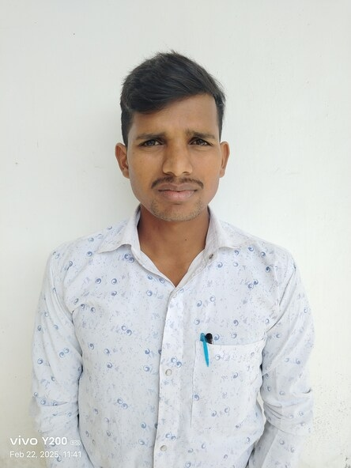

2024 - Present
Software Development & Product Learning
Building responsive interfaces and practical projects that combine clean design, usability, and real-world functionality using modern web technologies.
Software Developer • AI/ML Enthusiast • Problem Solver
I’m Sant Kumar, a Computer Science professional focused on software development, web technologies, and artificial intelligence. I enjoy transforming ideas into polished, user-friendly products that solve real-world problems with practical, scalable solutions.

About Me
I am Sant Kumar, a Computer Science professional with a strong foundation in software development, web technologies, AI/ML, and problem solving. I enjoy building practical, user-focused digital products and continuously improving my technical skills to meet industry standards.
My experience includes hands-on project development, frontend creation, database work, and building solutions that combine usability, performance, and real-world value. I am passionate about learning modern technologies and contributing to meaningful software initiatives.
Skills
Experience
Building responsive interfaces and practical projects that combine clean design, usability, and real-world functionality using modern web technologies.
Designed and developed application concepts including a Hospital Management System, music streaming-inspired interfaces, and AI-driven chatbot experiences.
Strengthened my concepts in C, Java, Python, DBMS, and data structures while improving analytical thinking, coding discipline, and problem-solving capability.
Projects
A digital solution to manage patient records, appointments, and hospital data with a focus on usability and efficient workflows.

An intelligent conversational prototype designed to provide quick responses and improve user interaction through AI-driven experiences.
Contact

Software Developer • AI/ML Enthusiast • Problem Solver